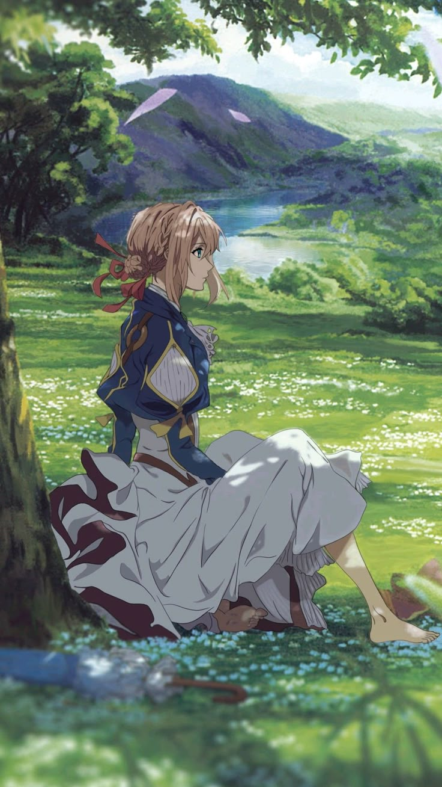
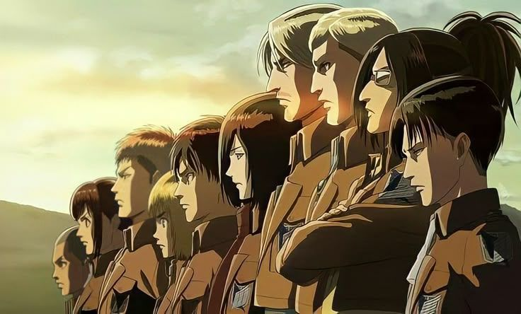
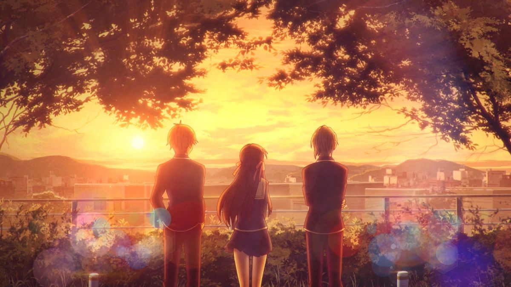
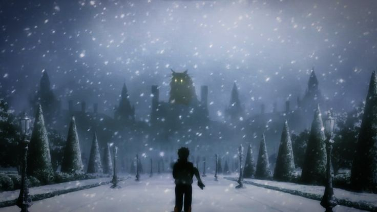
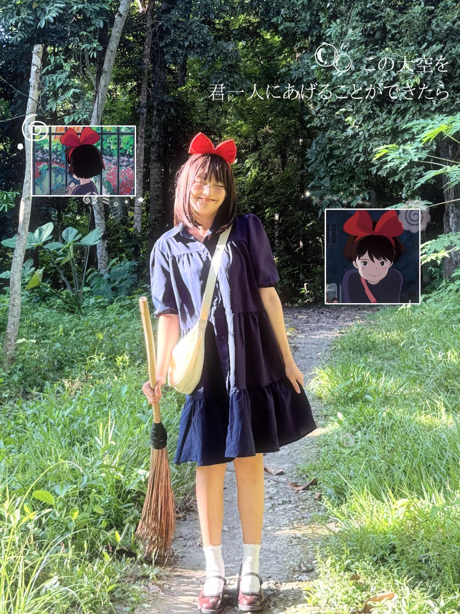

Modern Animation Styles

Anime has changed a lot over the years as technology has continued to improve. Most modern anime is made with digital tools rather than hand drawn. This lets studios create smoother animation and detailed backgrounds while making the production process more efficient.
Although digital animation has become the standard many, studios continue to keep the artistic style that makes anime unique. Some productions combine drawing techniques with CGI to create action scenes and realistic environments. Studios like Ufotable and Studio Ghibli are known for their beautiful visuals and attention to detail, showing that modern technology can enhance animation while still keeping the creativity and emotion that fans love.
Popular Anime Genres
Anime offers a wide variety of genres, each appealing to different audiences.
Shonen
Action based adventures, such as Attack on Titan, Naruto, and Demon Slayer.

Shojo
Romantic and emotional stories like Fruits Basket, Ouran Highschool Host Club, and Sailor Moon.

Seinen
Mature series including Vinland Saga, Monster, and Berserk.
Fantasy & Isekai
Magical adventures like Frieren, Re:Zero, and Sword Art Online.

Anime Around the World
Over the past two decades, anime has grown from a form of entertainment that was mostly enjoyed in Japan into a worldwide cultural phenomenon. Thanks to streaming platforms and online communities, fans can now watch new episodes shortly after they are released, making anime more accessible to everyone. Official streaming services such as
Crunchyroll,
Netflix,
HIDIVE, and
Disney+
allow millions of people to enjoy anime legally through subtitles and English dubbed versions.
Anime has made a strong global community. Every year thousands of fans go to anime conventions where they can meet voice actors, buy merch, participate in gaming tournaments, and talk about their favorite series. Cosplaying is when you dress up as anime characters, it has become one of the most iconic parts of anime culture and allows fans to express their creativity while connecting with others who share the same interests.
Social media has played an important role in anime's growth as well. Platforms such as YouTube, TikTok, Instagram, and Reddit allow fans to share opinions, fan art, and cosplays with people from around the world. Streaming services, conventions, cosplay, and online communities have turned anime into a global hobby that continues to bring people together across different cultures.

Anime Beyond Television
Anime has become much more than just entertainment. It has influenced many parts of popular culture around the world, inspiring creativity, fashion, music, and even the video game industry.
- Fashion: Many clothing brands have collaborated with popular anime series. Japanese street fashion has also been influenced by anime styles and colors.
- Video Games: Anime has inspired countless video games, including titles based on popular series such as Naruto, Dragon Ball, and Demon Slayer. Many original games, like Genshin Impact, also use anime inspired art styles.
- Music: Anime opening and ending songs have become popular worldwide. People listen to openings and endings like normal music. Artists also use clips from anime in their songs.
- Art: Anime's unique character designs, expressive emotions, and colorful backgrounds have inspired artists, illustrators, and animators around the world to develop their own creative styles.
- Merch: Fans collect figures, posters, clothing, keychains, manga, plushies, and other collectibles based on their favourite anime series, making merch an important part of anime culture.
- Cosplay: Cosplay allows fans to dress as their favorite anime characters. It has become one of the most iconic parts of anime culture and is a major attraction at conventions around the world.
"Anime has grown from a unique Japanese style of animation into a worldwide form of storytelling that continues to inspire creativity, imagination, and cultural appreciation."